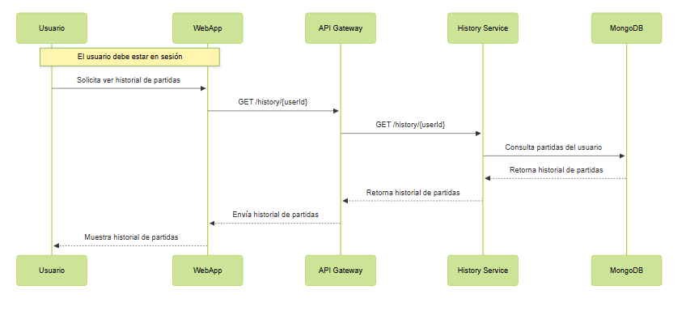
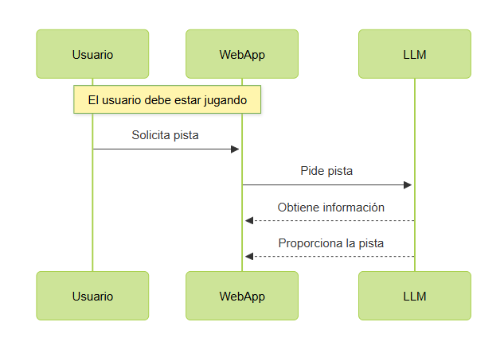
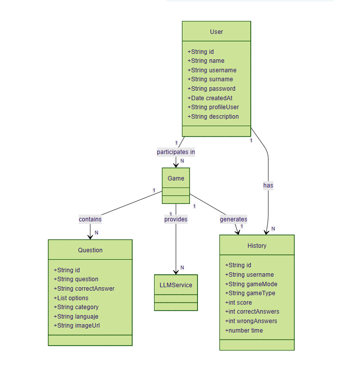

About arc42
arc42, the template for documentation of software and system architecture.
Template Version 8.2 EN. (based upon AsciiDoc version), January 2023
Created, maintained and © by Dr. Peter Hruschka, Dr. Gernot Starke and contributors. See https://arc42.org.
1. Introducción y Objetivos
La aplicación WIChat permite a los usuarios participar en un concurso online de preguntas y respuestas similar a "Saber y Ganar".
El usuario ve una imagen en pantalla y puede seleccionar diferentes opciones para adivinar de qué lugar se trata. El usuario se encontrará con una serie de modos de juego, entre los que se encuentran:
-
"Modo normal": el usuario tiene un tiempo limitado para adivinar la imagen y se puede pedirle ayuda a un LLM para facilitarle la tarea. Dentro de este modo además hay:
-
"Modo VS": El usuario juega haciendo que el LLM adivine lo que un texto describe. El LLM tiene un tiempo limitado para adivinar.
Ambos tienen varias submodalidades, como por ejemplo:
-
"Países": El usuario tendrá que adivinar en base a la foto de un lugar de un país y la ia en base al nombre del país.
-
"Bandera": El usuario tendrá que adivinar por la imagen de una bandera.
-
"Famosos": El usuario tendrá que adivinar por la imagen de una persona famosa y la ia en base a un texto que describe a esa persona.
Tanto las pistas como las imágenes son generadas automáticamnete a partir de Wikidata (https://www.wikidata.org/). En caso de las pistas se tratan cuidadosamente para que no contengan información que pueda dar la respuesta correcta de manera directa.
1.1. Resumen de Requisitos
-
Se deberá poder acceder desde la web tanto en ordenadores como en teléfonos.
-
El sistema mostrará imagenes, las respuestas y un sistema de pistas.
-
Los usuarios podrán registrarse en el sistema.
-
Los usuarios registrados podrán ver su historial de participaciones.
-
Los usuarios podrán ver su puntuación y la de otros usuarios.
-
Se podrá interactuar con la aplicación para obtener pistas gracias a un modelo de lenguaje.
-
Las preguntas y las pistas serán generados automáticamente a partir de los datos de Wikidata.
-
El sistema permitirá acceder a los datos de los usuarios y de las preguntas accedidas mediante unas APIs.
-
Habrá un plazo de tiempo determinado para responder a las preguntas.
1.2. Objetivos de Calidad
Los tres principales (máximo cinco) objetivos de calidad para la arquitectura cuya realización es de mayor importancia para las partes interesadas principales. Nos referimos específicamente a objetivos de calidad para la arquitectura. No los confundas con los objetivos del proyecto; no son necesariamente idénticos.
Considera esta visión general de posibles temas (basada en el estándar ISO 25010):

Debes conocer los objetivos de calidad de tus partes interesadas más importantes, ya que influirán en decisiones arquitectónicas fundamentales. Sé muy concreto acerca de estas cualidades y evita términos ambiguos. Si como arquitecto no sabes cómo se juzgará la calidad de tu trabajo…
Una tabla con objetivos de calidad y escenarios concretos, ordenados por prioridades.
| Prioridad | Objetivos de calidad | Escenarios concretos |
|---|---|---|
1 |
Seguridad |
Los datos de los usuarios (credenciales, historial de juegos) deben estar cifrados. El sistema debe prevenir ataques comunes (SQL injection, XSS). |
2 |
Usabilidad |
Los usuarios deben poder interactuar con el sistema de manera intuitiva, registrarse, jugar y obtener pistas con la menor dificultad posible. El tiempo de respuesta para mostrar una pregunta o pista no debe superar los 2 segundos. |
3 |
Fiabilidad |
El sistema debe garantizar una disponibilidad del 99%. Las pistas generadas por el LLM deben ser correctas en un 95% de los casos, minimizando alucinaciones y respuestas erróneas. |
4 |
Rendimiento |
El sistema debe soportar hasta 50 usuarios concurrentes sin degradación del rendimiento. El tiempo de respuesta de la API de Wikidata y del LLM no debe superar los 5000 ms en el 95% de las solicitudes. |
5 |
Mantenibilidad |
El código debe estar documentado y modularizado, permitiendo que todos los implicados en el desarrollo puedan trabajar con ello lo mejor posible. |
1.3. Partes Interesadas
| Rol/Nombre | Contacto | Expectativas |
|---|---|---|
Profesor/Jose Emilio Labra Gayo |
Que se emplee el conocimiento lo mejor posible para tomar las decisiones arquitectónicas más adecuadas favoreciendo el aprendizaje. |
|
Profesor/Pablo González |
Que se emplee el conocimiento lo mejor posible para tomar las decisiones arquitectónicas más adecuadas favoreciendo el aprendizaje. |
|
Profesor/Irene Cid Rico |
Que se emplee el conocimiento lo mejor posible para tomar las decisiones arquitectónicas más adecuadas favoreciendo el aprendizaje. |
|
Universidad/Uniovi |
Que se emplee el conocimiento lo mejor posible para tomar las decisiones arquitectónicas más adecuadas favoreciendo el aprendizaje. |
|
Cliente/RTVE |
Que las decisiones arquitectónicas sean las más adecuadas para que la aplicación funcione de la manera que esperan. |
|
Empresa/ChattySw |
Que las decisiones arquitectónicas sean las más adecuadas para que la aplicación funcione de la manera que esperan los clientes. |
|
Empresa/Empathy |
Interesada en que durante el desarrollo se utilice su tecnología de procesamiento de lenguaje natural de la manera más eficiente y adecuada para que tengamos un buen aprendizaje y para realizar pruebas que aporten la mayor parte . |
|
Alumno/Jorge Puente García |
Que las decisiones arquitectónicas sean las más adecuadas y que tengan una aplicabilidad dentro de las posibilidades de los desarrolladores. |
|
Alumno/Claudia Rodriguez Fuertes |
Que las decisiones arquitectónicas sean las más adecuadas y que tengan una aplicabilidad dentro de las posibilidades de los desarrolladores. |
|
Alumno/German García de la Llana |
Que las decisiones arquitectónicas sean las más adecuadas y que tengan una aplicabilidad dentro de las posibilidades de los desarrolladores. |
|
Alumno/Iván García García |
Que las decisiones arquitectónicas sean las más adecuadas y que tengan una aplicabilidad dentro de las posibilidades de los desarrolladores. |
2. Restricciones arquitectonicas
2.1. Restricciones de documentación
| Restricción | Descripción |
|---|---|
Arc42 |
El proyecto debe seguir la estructura de documentación de Arc42. |
2.2. Restricciones técnicas
| Restricción | Descripción |
|---|---|
Acceso a datos |
La información de los usuarios deberá ser accesible a través de una API para garantizar la seguridad de los datos. |
APIs externas |
La aplicación hará uso de la API de Wikidata para obtener los datos necesarios y generar imágenes y preguntas de los lugares. Además, se integrará con la API del LLM externo Empathy AI para generar pistas sobre las imagenes de forma conversacional. |
Despliegue |
La aplicación debe estar desplegada y accesible en la web. |
Pruebas |
La aplicación debera de pasar una serie de pruebas para asegurar su correcto funcionamiento. |
2.3. Organizativas
| Restricción | Descripción |
|---|---|
Evaluación |
El proyecto será evaluado cada tres semanas, por lo que cada módulo avanzará a través de varias versiones, las cuales estarán alineadas con las evaluaciones parciales. |
Git y GitHub |
El uso de Git como sistema de control de versiones es obligatorio. El proyecto se alojará en un repositorio público en la plataforma GitHub, y todo el trabajo realizado, así como las decisiones tomadas deben reflejarse en dicho repositorio. |
Equipo |
El equipo estará formado por 4 personas. |
Reuniones |
Se realizará obligatoriamente una reunión semanal. |
3. Alcance y contexto del sistema
3.1. Contexto de negocio
WIChat es una aplicación web de preguntas y respuestas basada en imágenes, desarrollada por ChattySw para RTVE. La aplicación permite a los usuarios registrarse, jugar y obtener premios por responder correctamente a preguntas sobre imágenes generadas automáticamente. Además, tendrá integrado un modelo de lenguaje (LLM) que proporcionará pistas para ayudar a los concursantes a responder correctamente.
Usuario: Identidad que iteractúa con el sistema.
WiChat: Maneja las entradas del usuario y se conecta a las APIs externas.
Wikidata: Proporciona datos precisos y actualizados que se utilizan para generar las preguntas y respuestas de la aplicación.
LLM: Modelo de lenguaje a gran escala que procesa las consultas de los usuarios, generando respuestas coherentes y relevantes basadas en el contexto y los datos obtenidos de Wikidata y la base de datos.
Base de datos: Almacena los datos de los usuarios, estadísticas de juegos y registros de consultas.
3.2. Technical Context
Wichat App: Vista con la que interactúa el usaurio. Se conecta con Gateway Service para acceder al resto de los servicios.
Gateway Service: Servicio que actúa como intermediario entre la aplicación y los servicios de backend. Se encarga de enrutar las solicitudes y respuestas entre la aplicación y los servicios.
Authentication Service: Servicio que gestiona la autenticación y autorización de los usuarios. Se encarga de verificar las credenciales de los usuarios y proporcionar tokens de acceso.
User Service: Servicio que gestiona la información de los usuarios y de los perfiles.
History Service: Servicio que gestiona el historial de juegos y estadísticas de los usuarios. Se encarga de almacenar y recuperar la información relacionada con los juegos jugados por los usuarios.
LLM Service: Servicio que se encarga de interactuar con el modelo de lenguaje a gran escala (LLM). Se encarga de enviar las consultas del usuario al LLM y recibir las respuestas generadas por el modelo.
Question Service: Servicio que se encarga de gestionar las peticiones de `reguntas desde la aplicación. Hace de intermediario entre la aplicación y los servicios para guardar y generar preguntas.
Question Generate Service: Servicio que se encarga de generar preguntas a partir de los datos obtenidos de Wikidata. Se encarga de enviar las consultas a la API de Wikidata y recibir las respuestas generadas por el modelo.
Question Data Service: Servicio que se encarga de gestionar los datos de las preguntas generadas. Se encarga de almacenar y recuperar la información relacionada con las preguntas generadas por el modelo. Se comunica con la base de datos para almacenar y recuperar las preguntas.
questiondb: Base de datos que almacena la información relacionada con las preguntas generadas por el modelo. Se encarga de almacenar y recuperar la información relacionada con las preguntas generadas por el modelo.
userdb: Base de datos que almacena la información relacionada con los usuarios y sus perfiles. Se encarga de almacenar y recuperar la información relacionada con los usuarios registrados en la aplicación.
4. Estrategia de solución
4.1. Decisiones tecnológicas
Para el desarrollo de la aplicación se decidió utilizar las siguientes tecnologías:
-
JavaScript será el lenguaje de programación principal.
-
Se ha tomado esta decisión debido a la facilidad de integración con las tecnologías seleccionadas para el desarrollo de la aplicación así hacemos que todo esté en el mismo lenguaje y favorecemos a todos los desarrolladores.
-
-
React.js para construir interfaces de usuario.
-
Se ha seleccionado React.js por su facilidad de uso y su capacidad para crear interfaces de usuario interactivas y usables. Además, hay una comunidad muy activa y una gran cantidad de recursos disponibles para aprender y resolver problemas.
-
-
Node.js para construir el back-end.
-
Se ha seleccionado Node.js por su capacidad para manejar múltiples conexiones simultáneas y su facilidad de integración con otras tecnologías. Además, hay una comunidad muy activa y una gran cantidad de recursos disponibles para aprender y resolver problemas.
-
-
GitHub para el control de versiones.
-
Se ha seleccionado GitHub por su facilidad de uso y su capacidad para gestionar proyectos de software de forma colaborativa y segura.
-
-
Docker para la contenerización de la aplicación.
-
Se ha seleccionado Docker por su capacidad para crear contenedores ligeros y portátiles que pueden ejecutarse en cualquier entorno y que facilitan el mantenimiento y el arreglo e problemas.
-
-
Azure para el despliegue de la aplicación.
-
Se ha seleccionado Azure por su capacidad para escalar la aplicación de forma automática y su facilidad de integración con otras tecnologías.
-
-
Wikidata API.
-
Se ha seleccionado Wikidata API para obtener información sobre las imágenes de forma programática.
-
-
Empathy API.
-
Modelo largo de lenguaje (LLM) para ofrecer la posibilidad de obtener pistas de las imagenes de forma conversacional.
-
Se han considerado otras tecnologías para el desarrollo back-end como Spting Boot, pero finalmente se decidió utilizar JavaScript por su enfoque en el desarrollo ágil junto con la facilidad de integración con Node.js y React.js ya que todo trabaja con javascript.
4.2. Descomposición de alto nivel
4.3. Decisiones para alcanzar objetivos de máxima calidad
Objetivo de calidad |
Decisión |
Seguridad |
Se ha decidido seguir las mejores prácticas de seguridad en el desarrollo de la aplicación, como la validación de datos de entrada y la protección contra ataques de inyección de código. |
Usabilidad |
Se realizarán pruebas de usabilidad con usuarios reales. Serán al menos 4 tandas de 3 usuarios cada una, teniendo en cuenta que se aborden diferentes intervalos de edad y con diferente manejo de la informática. |
Fiabilidad |
Se ha tomado la decisión de realizar pruebas de regresión y pruebas de integración para garantizar la fiabilidad de la aplicación. |
Rendimiento |
Se realizarán pruebas de carga para garantizar el rendimiento de la aplicación para poder tener al menos 100 usuarios a la vez. |
Mantenibilidad |
Se utilizarán patrones de diseño y buenas prácticas de programación para garantizar la mantenibilidad de la aplicación. |
Eficiencia |
Se optimizará el uso de recursos para garantizar que la aplicación funcione de manera eficiente donde se despliegue, además de usar los recursos externos también de manera eficiente. |
Portabilidad |
La aplicación se desarrollará utilizando tecnologías y frameworks multiplataforma, asegurando que pueda desplegarse en diferentes entornos (Windows, Linux, macOS) sin generar problemas. |
4.4. Decisiones de organización relevantes
El flujo de trabajo se organizará en reuniones semanales, que se llevarán a cabo según sea necesario. Una de las reuniones se realizará durante la clase de laboratorio y se centrará en decisiones y tareas menores. Las reuniones posteriores se realizarán de manera remota y estarán dedicadas a decisiones más detalladas y exhaustivas. En estas reuniones será necesaria la asistencia de todos los miembros del equipo para evitar problemas.
Cada tarea asignada, así como problemas encontrados, se documentará como un Issue en GitHub. Además, se utilizará GitHub Projects para la organización de las tareas del equipo. No habrá una división estricta entre front-end y back-end, todos los miembros del equipo trabajarán en ambas áreas. Para cada tarea asignada, se creará una rama específica, y el trabajo realizado se volcará en una rama develop mediante pull requests. Una vez que se haya completado una funcionalidad y se sepa que todo va bien, se fusionará la rama develop con la rama master.
5. Vista de bloques de construcción
5.1. Sistema general de caja blanca
- Motivación
-
El propósito principal del sistema es ejecutar un juego de preguntas con imágenes o texto utilizando información obtenida dinámicamente de la Wikidata API y además teniendo la posibilidad de interactuar con un LLM para solicitar su ayuda o ayudarlo a encontrar la respuesta dependiendo del modo de juego. Esto permite a los usuarios interactuar con datos reales y actualizados, mejorando la experiencia de usuario y la utilidad de la aplicación.
| Building Blocks | Descripción |
|---|---|
WICHAT |
Parte principal de la aplicación, que controla el flujo del juego, maneja la lógica de negocio y coordina la interacción entre los servicios. Implementado en Node.js con un enfoque modular. |
BD |
Base de datos encargada de almacenar los datos relacionados con los usuarios y con las preguntas. Se utiliza MongoDB. |
Wikidata |
Fuente de datos a la que se conecta la aplicación para obtener las imágenes, las preguntas y la información para facilitar el trabajo de la aplicación. |
LLM |
Modelo de lenguaje con el que el usuario puede interactuar para obtener pistas sobre las preguntas del juego. |
-
Frontend ↔ API Gateway: Interfaz RESTful para la comunicación entre el frontend y el backend.
-
API Gateway ↔ Backend: Interfaz interna para enrutar solicitudes a los servicios.
-
Backend ↔ Base de Datos: Interfaz para acceder y gestionar los datos almacenados.
5.2. Nivel 2
| Building Blocks | Description |
|---|---|
API Gateway |
Punto de entrada unificado para todas las peticiones del frontend. Redirige solicitudes a los distintos servicios y expone métricas y documentación. |
Question Management |
Conjunto de servicios encargados de gestionar el ciclo de vida de las preguntas en la aplicación. Incluye los siguientes componentes: - Question Generator Service Parte de la aplicación encargada de conectarse a Wikidata y obtener imágenes e información para las preguntas del juego. - Question Data Service Parte de la aplicación encargada de tratar con la información de las preguntas conectándose a la base de datos para almacenar esta información y eliminando las preguntas que ya han salido. - Question Service
Parte de la aplicación encargada de gestionar el ciclo de vida de las preguntas en la aplicación. Orquesta dos componentes internos ( |
User Management |
Conjunto de servicios encargados de gestionar la información del usuario. Incluye los siguientes componentes: - User Service Parte encargada de tratar la información del usuario: puntuación, historial, etc. Se conecta a la base de datos para almacenar esta información. - Authentication Service Parte encargada de administrar la autentificación de usuarios. Se conecta a la base de datos para almacenar y comprobar los nombres y contraseñas. - History Service Parte encargada de el tratamiento de los datos de las partidas de todos los usuarios. Se conecta a la base de datos para almacenar esta información. |
LLM Service |
Parte encargada de la comunicación con el modelo de lenguaje. Envía la información necesaria para obtener las pistas del jugador y devolverlas. |
5.2.1. Black Box: API Gateway
- Purpose/Responsibility
-
El API Gateway actúa como un único punto de entrada para todas las peticiones desde el frontend. Es responsable de:
-
Redirigir solicitudes REST al servicio correspondiente (usuarios, autenticación, historial, preguntas, modelo LLM).
-
Unificar la interfaz de comunicación entre cliente y microservicios.
-
Agregar instrumentación con Prometheus para monitoreo.
-
Publicar documentación del API utilizando Swagger (OpenAPI).
-
Gestionar CORS y errores de red para los servicios backend.
-
- Interface(s)
-
-
HTTP REST:
-
/questions/:lang/:category→ Question Generator Service. -
/createUserHistory,/getUserStats,/getLeaderboard→ History Service. -
/user/profile/:username,/user/update/profile/:username→ User Service. -
/login→ Auth Service. -
/askllm→ LLM Service. -
/api-doc→ Exposición de documentación Swagger. -
/health→ Endpoint para chequeo de estado.
-
- Quality/Performance Characteristics
-
-
Tolerancia a fallos básica mediante manejo de errores HTTP con axios.
-
Extensible: fácilmente ampliable a nuevos servicios.
-
Observabilidad: expone métricas para Prometheus.
-
Documentado: incluye Swagger/OpenAPI.
-
- Directory/File Location
-
-
Imagen Docker desplegada en Azure.
-
- Fulfilled Requirements
-
-
Centraliza la entrada de peticiones HTTP.
-
Permite escalabilidad y desacoplamiento entre frontend y servicios.
-
Facilita pruebas y exploración del sistema vía documentación automática.
-
- Open Issues/Problems/Risks
-
-
Usa rutas fijas, sin descubrimiento dinámico de servicios. ---
-
5.2.2. Black Box: Question Service
- Responsabilidad
-
Se encarga de gestionar el ciclo de vida de las preguntas en el juego. Orquesta dos componentes internos (
question-data-serviceyquestion-generate-service) para:-
Verificar si hay suficientes preguntas disponibles en la base de datos.
-
Generar nuevas preguntas si es necesario.
-
Devolver una pregunta aleatoria al usuario.
-
Eliminar la pregunta una vez ha sido servida.
-
- Interfaces expuestas
-
-
GET /getQuestionsDb/:lang/:categoryRecibe solicitudes del API Gateway para obtener una pregunta aleatoria de una categoría e idioma concretos. Se asegura de que haya suficientes preguntas generadas y disponibles.
-
- Relaciones
- 🔁 Internas
-
-
question-data-service: utilizado para obtener, contar, y eliminar preguntas desde la base de datos. -
question-generate-service: encargado de generar nuevas preguntas usando información de Wikidata si no hay suficientes preguntas en la base de datos.
-
- ⚡ Externas
-
-
Gateway Service (recibe la solicitud).
-
- Datos
-
-
Aunque no gestiona directamente almacenamiento, manipula datos almacenados en MongoDB a través de
question-data-service.
-
- Tecnología
-
-
Node.js
-
Express.js
-
- Notas adicionales
-
-
Incluye lógica de espera y reintento si no hay suficientes preguntas disponibles en la base de datos.
-
No es un microservicio autónomo en términos de almacenamiento: depende de servicios internos para la persistencia y generación.
-
6. Nivel 3
6.1. Black Box: Question Management
| Building Blocks | Description |
|---|---|
Question Generator Service |
Parte de la aplicación encargada de conectarse a Wikidata y obtener imágenes e información para las preguntas del juego. |
Question Data Service |
Parte de la aplicación encargada de tratar con la información de las preguntas conectándose a la base de datos para almacenar esta información y eliminando las preguntas que ya han salido. |
Question Service |
Parte de la aplicación encargada de gestionar el ciclo de vida de las preguntas en la aplicación. Orquesta dos componentes internos (question-data-service y question-generator-service). Es el encargado de relacionarse con gateway y de recibir las peticiones de preguntas. Se encarga de la lógica de negocio relacionada con las preguntas. |
6.1.1. Black Box: Question Generation Service
- Responsabilidad
-
Este servicio es responsable de generar preguntas dinámicas a partir de datos obtenidos de Wikidata. Su propósito es crear preguntas tipo quiz (imagen + opciones) relacionadas con una categoría temática como "País", "Ciudad", etc. Cada pregunta incluye una imagen, opciones posibles y una respuesta correcta. Las preguntas generadas se almacenan en una base de datos para su uso posterior.
- Interfaces expuestas
-
-
Función interna:
generateQuestionsByCategory(category, language, numImages)Genera preguntas usando datos de Wikidata para una categoría específica.
-
- Entrada
-
-
category(string): Categoría de Wikidata desde donde se obtienen las imágenes (por ejemplo, "country"). -
language(string): Idioma para los labels y preguntas. -
numImages(number): Número de preguntas/imágenes a generar.
-
- Salida
-
-
Lista de preguntas generadas. Cada pregunta tiene:
-
question(string): Texto de la pregunta. -
options(array): Opciones posibles (1 correcta + 3 incorrectas). -
correctAnswer(string): Opción correcta. -
imageUrl(string): URL de la imagen. -
category,language: Metadatos.
-
- Relaciones
- 🔁 Internas
-
-
utils.readFromFile: para leer el archivo de configuración de queries (queryCategories.json). -
dataService.saveQuestion: para almacenar las preguntas generadas en la base de datos. -
Question(modelo de Mongoose): modelo de pregunta en MongoDB.
-
- Externas
-
-
Wikidata SPARQL endpoint: fuente principal de imágenes y datos semánticos para construir preguntas.
-
- Datos
- Entrada dinámica
-
-
Categoría (por ejemplo, "country")
-
Idioma (por ejemplo, "es", "en")
-
Número de preguntas (ej. 5)
-
- Ejemplo de una pregunta generada
-
json { "question": "¿A qué país pertenece esta imagen?", "options": ["España", "Italia", "Alemania", "Francia"], "correctAnswer": "España", "imageUrl": "https://upload.wikimedia.org/wikipedia/commons/…", "category": "country", "language": "es" } - Tecnología
-
-
Node.js
-
Axios (peticiones HTTP a Wikidata)
-
MongoDB (para guardar preguntas)
-
SPARQL (consultas semánticas a Wikidata)
-
- Notas adicionales
-
-
Se utilizan consultas SPARQL definidas dinámicamente en un archivo JSON externo para obtener imágenes y etiquetas de Wikidata.
-
Las opciones incorrectas se generan con una segunda consulta a países en Wikidata, excluyendo la respuesta correcta.
-
La lógica asegura que cada pregunta tenga 3 distracciones viables antes de ser guardada.
-
Se implementa una mezcla aleatoria de opciones para cada pregunta.
-
6.1.2. Black Box: Question Data Service
- Responsabilidad
-
Este servicio actúa como capa de acceso a datos para las preguntas generadas por el sistema. Se encarga de guardar, eliminar, contar y obtener preguntas desde la base de datos MongoDB usando el modelo
Question. - Interfaces expuestas
-
-
saveQuestion(question)Guarda una nueva pregunta en la base de datos. Entrada: Objeto con los campos de una pregunta (question,options,correctAnswer,imageUrl,category,language). Salida: Ninguna (lanza error si falla). -
getNumberQuestionsByCategory(language, category)Devuelve el número total de preguntas en una categoría y idioma específicos. Entrada: -
language(string): Idioma. -
category(string): Categoría. Salida: Número total de preguntas (integer). -
deleteQuestionById(id)Elimina una pregunta según su ID en la base de datos. Entrada: -
id(string): ID de MongoDB de la pregunta. Salida: Ninguna (lanza error si falla). -
getRandomQuestionByCategory(language, categoryParam)Retorna una pregunta aleatoria de una categoría e idioma determinados. Entrada: -
language(string) -
categoryParam(string) Salida: Objeto con los datos de la pregunta onullsi no hay coincidencias.
-
- Relaciones
- 🔁 Internas
-
-
Usa el modelo Mongoose
Questionpara todas las operaciones con MongoDB.
-
- 🔌 Externas
-
-
Este servicio es utilizado por el Question Generation Service y probablemente por servicios de frontend/juego para recuperar preguntas aleatorias.
-
- Datos
- Modelo
Question -
json { "question": "¿A qué país pertenece esta imagen?", "options": ["España", "Italia", "Francia", "Alemania"], "correctAnswer": "España", "imageUrl": "https://upload.wikimedia.org/…", "category": "country", "language": "es" } - Colección en MongoDB
-
questions - Tecnología
-
-
Node.js
-
MongoDB con Mongoose
-
6.1.3. Black Box: Question Service
- Responsabilidad
-
Este servicio se encarga de exponer un endpoint REST para obtener preguntas al usuario. Si no hay suficientes preguntas en la base de datos, coordina la generación automática mediante el
question-generate-service. - Endpoint expuesto
-
-
GET /getQuestionsDb/:lang/:categoryDevuelve una pregunta aleatoria de una categoría e idioma determinados. Si hay menos de 5 preguntas almacenadas en MongoDB, solicita la generación automática de nuevas preguntas.
-
- Parámetros de URL
-
-
:lang– idioma (por ejemplo,es,en) -
:category– categoría de pregunta (por ejemplo,country)
-
- Respuesta
-
-
200 OK: Objeto con la pregunta -
404 Not Found: No hay más preguntas disponibles -
500 Internal Server Error: Error en el proceso
-
- Lógica interna
-
-
Verifica si hay al menos 5 preguntas en la base de datos.
-
Si no las hay, solicita la creación de nuevas preguntas al
question-generate-service(hasta alcanzar 20). -
Espera activamente (con intentos) hasta que haya al menos 4 preguntas disponibles antes de servir una.
-
Una vez entregada una pregunta, la elimina de la base de datos para evitar repeticiones.
-
- Relaciones
- 🔁 Internas
-
-
question-data-service: Para contar, obtener y eliminar preguntas. -
question-generate-service: Para generar nuevas preguntas si no hay suficientes.
-
- 🌐 Externa
-
-
Consumido por el cliente/juego web o móvil que requiere preguntas una por una.
-
- Datos
-
-
Entrada: idioma (
lang), categoría (category) -
Salida: pregunta en formato:
json { "_id": "661bfc…", "question": "¿A qué país pertenece esta imagen?", "options": ["Francia", "Italia", "España", "Alemania"], "correctAnswer": "España", "imageUrl": "https://upload.wikimedia.org/…", "category": "country", "language": "es" }
-
- Tecnología
-
-
Node.js
-
Express.js
-
6.2. Black Box: User Management
| Building Blocks | Description |
|---|---|
User Service |
Parte encargada de tratar la información del usuario: puntuación, historial, etc. Se conecta a la base de datos para almacenar esta información. |
Authentication Service |
Parte encargada de administrar la autentificación de usuarios. Se conecta a la base de datos para almacenar y comprobar los nombres y contraseñas. |
History Service |
Parte encargada de el tratamiento de los datos de las partidas de todos los usuarios. Se conecta a la base de datos para almacenar esta información. |
6.2.1. Black Box: User Service
- Responsabilidad
-
Este servicio gestiona el registro, consulta y actualización del perfil de los usuarios en la aplicación.
- Endpoints expuestos
-
-
POST /userRegistra un nuevo usuario en la base de datos con validación de datos y encriptación de contraseña.
-
- Body esperado
-
json { "username": "usuario123", "password": "Contraseña123", "name": "Nombre", "surname": "Apellido" } - Validaciones
-
-
usernamemínimo 4 caracteres -
passwordmínimo 8 caracteres, con al menos un número y una mayúscula -
nameysurnameno vacíos
-
- Respuestas
-
-
200 OK: Usuario creado exitosamente (sin la contraseña) -
400 Bad Request: Datos inválidos o usuario ya registrado -
GET /user/profile/:usernameDevuelve el perfil de un usuario por su nombre de usuario (sin incluir la contraseña).
-
- Respuesta
-
-
200 OK: Objeto de usuario -
400 Bad Request: Usuario no encontrado -
PUT /user/update/profile/:usernameActualiza el perfil de un usuario (nombre, apellido, imagen de perfil y descripción).
-
- Body esperado
-
json { "name": "NuevoNombre", "surname": "NuevoApellido", "profilePicture": "https://link.to/image.jpg", "description": "Nueva descripción" } - Respuestas
-
-
200 OK: Usuario actualizado -
400 Bad Request: Datos inválidos o usuario no encontrado
-
- Lógica interna
-
-
Al registrar un usuario, valida todos los campos y encripta la contraseña con bcrypt.
-
Permite recuperar el perfil público de un usuario sin exponer su contraseña.
-
Permite modificar ciertos datos del perfil con validaciones básicas.
-
- Relaciones
-
-
🔁 Internas: utiliza el modelo
Userde Mongoose. -
🌐 Externa: Consumido por la interfaz del cliente (registro, perfil, edición).
-
- Tecnología
-
-
Node.js
-
Express.js
-
MongoDB con Mongoose
-
Bcrypt para la encriptación de contraseñas
-
6.2.2. Black Box: Authentication Service
- Responsabilidad
-
Este servicio se encarga de gestionar la autenticación de los usuarios. Proporciona funcionalidades como iniciar sesión, validando las credenciales del usuario y generando un token JWT para autenticar futuras solicitudes. Utiliza la base de datos para verificar las credenciales de usuario.
- Interfaces expuestas
-
-
POST /loginRecibe elusernamey lapasswordde un usuario, verifica que sean correctos, y si lo son, genera un token JWT para la autenticación del usuario.
-
- Entrada
-
-
username: Nombre de usuario. -
password: Contraseña del usuario.
-
- Salida
-
-
token: JWT que el cliente puede usar para autenticarse en futuras solicitudes. -
username: El nombre de usuario. -
createdAt: Fecha de creación de la cuenta del usuario.
-
- Relaciones
- 🔁 Internas
-
-
MongoDB: utilizado para almacenar los datos de usuario.
-
User(modelo de MongoDB): modelo que define la estructura de los datos de usuario en la base de datos.
-
- Externas
-
-
API Gateway (gestiona las solicitudes que provienen del frontend y las dirige a este servicio). bcrypt: para la encriptación y comparación de contraseñas. jwt: para la generación y validación de tokens de acceso.
-
- Datos
-
-
Almacena los datos del usuario en una base de datos MongoDB, incluyendo:
-
username: Nombre de usuario. -
password: Contraseña encriptada del usuario. -
createdAt: Fecha de creación de la cuenta del usuario.
-
- Tecnología
-
-
Node.js
-
Express.js
-
MongoDB
-
bcrypt (para encriptación de contraseñas)
-
jsonwebtoken (para la creación de tokens JWT)
-
express-validator (para validación de datos de entrada)
-
- Notas adicionales
-
-
La autenticación se basa en la comparación de contraseñas encriptadas utilizando bcrypt.
-
El servicio genera un token JWT válido por una hora, que debe ser incluido en las solicitudes subsecuentes para autenticarse en el usuario.
-
Se valida que los campos
usernameypasswordsean proporcionados y cumplan con una longitud mínima antes de procesar la solicitud. -
El token JWT es enviado como respuesta en caso de que las credenciales sean correctas.
-
Si las credenciales son incorrectas, se devuelve un error de autenticación (401).
-
6.2.3. Black Box: History Service
- Responsabilidad
-
Se encarga de gestionar y almacenar el historial de juegos de los usuarios, incluyendo su puntuación, respuestas correctas/incorrectas, tiempo jugado y modo de juego. También proporciona estadísticas detalladas y el ranking global de los jugadores.
- Interfaces expuestas
-
-
POST /createUserHistoryRecibe los datos del historial del juego de un usuario y lo almacena en la base de datos. -
GET /getUserHistoryDevuelve el historial de juegos de un usuario específico, identificado por suusername. -
GET /getUserStatsObtiene estadísticas agregadas sobre el rendimiento de un usuario, como el total de juegos jugados, respuestas correctas, incorrectas, tiempo total y puntuación promedio. -
GET /getLeaderboardDevuelve el ranking global de los jugadores, ordenado por diferentes métricas como la puntuación total, precisión, tiempo promedio, etc.
-
- Relaciones
- 🔁 Internas
-
-
MongoDB: utilizado para almacenar y recuperar los datos de historial de usuario.
-
UserHistory(modelo de MongoDB): utilizado para definir y gestionar el esquema de los registros de historial de usuario.
-
- Externas
-
-
API Gateway (recibe las solicitudes del usuario y las redirige a este servicio).
-
- Datos
-
-
Almacena datos de historial de juego en una base de datos MongoDB, incluyendo:
-
username -
correctAnswers -
wrongAnswers -
time -
score -
gameMode
-
- Tecnología
-
-
Node.js
-
Express.js
-
MongoDB
-
Swagger para documentación OpenAPI
-
- Notas adicionales
-
-
Utiliza agregación en MongoDB para calcular estadísticas y rankings globales.
-
El servicio soporta filtrado por diferentes criterios (e.g., por
username,sortBy). -
Implementa un sistema de rankings que tiene en cuenta varios criterios y asigna un ranking global.
-
Validaciones de entrada básicas para asegurar que los datos sean consistentes antes de almacenarlos o procesarlos.
-
7. Vista de ejecución
7.1. Registro
Inicio de sesión

7.2. Jugar
7.3. Consultar historial

7.4. Interactuar con el chat

8. Vista de Despliegue
8.1. Introducción
La vista de despliegue describe cómo se implementa el sistema en la infraestructura de hardware y software. Esta sección incluye un diagrama de infraestructura, una descripción de los componentes y su asignación a bloques de construcción, así como las características de calidad y rendimiento que se esperan del sistema.
8.2. Nivel de Infraestructura 1
8.2.1. Diagrama de Infraestructura
8.2.2. Motivación
El sistema se desplegará en una infraestructura distribuida basada en la nube de Azure para garantizar:
-
Escalabilidad: Capacidad de añadir recursos según la demanda.
-
Alta Disponibilidad: Uso de virtualización en la nube para minimizar tiempos de inactividad.
-
Seguridad y Privacidad: Certificaciones de seguridad de Azure, cifrado y autenticación.
-
Portabilidad: Uso de contenedores Docker para facilitar la ejecución en diferentes entornos.
8.2.3. Características de Calidad y Rendimiento
-
Seguridad: Implementación de cifrado TLS para comunicaciones y autenticación basada en OAuth2.
-
Rendimiento: Uso de balanceadores de carga para distribuir el tráfico entre los servicios.
-
Resiliencia: Configuración de redundancia en los servicios críticos para evitar puntos únicos de fallo.
8.2.4. Asignación de Bloques de Construcción a la Infraestructura
-
Frontend: Desplegado en un servidor web Apache accesible desde internet.
-
Backend: Microservicios empaquetados en contenedores Docker (AuthService, UserService, LLM).
-
Base de Datos: MongoDB desplegado en un clúster de alta disponibilidad.
-
API Gateway: Desplegado en Azure API Management para gestionar y proteger las APIs.
8.3. Nivel de Infraestructura 2
8.3.1. Docker (Contenedores)
Explicación:
Docker se utiliza para empaquetar y desplegar los microservicios. Cada contenedor incluye:
-
Imágenes Docker: Código, dependencias y configuración.
-
Volúmenes: Persistencia de datos como logs y archivos temporales.
-
Redes Docker: Comunicación entre contenedores.
8.3.2. MongoDB (Base de Datos)
Explicación:
MongoDB se utiliza como base de datos principal para la aplicación. Características clave:
-
Alta Disponibilidad: Configuración de réplicas para garantizar la continuidad del servicio.
-
Escalabilidad Horizontal: Capacidad de añadir nodos al clúster según sea necesario.
-
Seguridad: Cifrado de datos en reposo y en tránsito.
8.4. Conclusión
La infraestructura descrita asegura que el sistema cumpla con los requisitos de calidad, rendimiento y seguridad necesarios para operar en entornos de desarrollo, pruebas y producción. La combinación de tecnologías como Azure, Docker y MongoDB permite un despliegue eficiente y adaptable a las necesidades del negocio.
9. Conceptos tranversales
This section describes overall, principal regulations and solution ideas that are relevant in multiple parts (= cross-cutting) of your system. Such concepts are often related to multiple building blocks. They can include many different topics, such as
-
models, especially domain models
-
architecture or design patterns
-
rules for using specific technology
-
principal, often technical decisions of an overarching (= cross-cutting) nature
-
implementation rules
Concepts form the basis for conceptual integrity (consistency, homogeneity) of the architecture. Thus, they are an important contribution to achieve inner qualities of your system.
Some of these concepts cannot be assigned to individual building blocks, e.g. security or safety.
The form can be varied:
-
concept papers with any kind of structure
-
cross-cutting model excerpts or scenarios using notations of the architecture views
-
sample implementations, especially for technical concepts
-
reference to typical usage of standard frameworks (e.g. using Hibernate for object/relational mapping)
A potential (but not mandatory) structure for this section could be:
-
Domain concepts
-
User Experience concepts (UX)
-
Safety and security concepts
-
Architecture and design patterns
-
"Under-the-hood"
-
development concepts
-
operational concepts
Note: it might be difficult to assign individual concepts to one specific topic on this list.

See Concepts in the arc42 documentation.
9.1. Modelo del dominio

9.2. Conceptos de experiencia de usuario (UX)
El objetivo es crear una aplicación intuitiva, accesible y atractiva, que permita a los usuarios disfrutar de la experiencia de juego de manera fluida.
-
Diseño Responsivo: La aplicación se adaptará a diferentes dispositivos y tamaños de pantalla, desde pantallas grandes como las de ordenador, pasando por pantallas medias como las de tablets hasta dispositivos móviles.
-
Feedback Visual: Proporcionar retroalimentación visual inmediata para las acciones del usuario.
-
Feedback Auditivo: Proporcionar retroalimentación auditiva inmediata para las acciones del usuario favoreciendo el entendimiento de este sobre lo que está ocurriendo.
9.3. Conceptos de seguridad y protección
-
Autenticación y Autorización: Se realiza una correcta autenticación de usuarios evitando que los datos de logueo sean vulnerables.
-
Protección de Datos: Se garantiza la privacidad de los usuarios encriptando las contraseñas y los datos sensibles.
9.4. Patrones de arquitectura y diseño
Serán utilizados dos patrones:
API Gateway: Este actúa como punto de entrada único para todas las solicitudes que realice el usuario delegandolas en sus servicios correspondientes.
Patrón de Servicios: Cada componente, como AuthService, UserService, LLM, HistoryService son servicios independientes que se enfocan en una funcionalidad específica, facilitando el mantenimiento del sistema.
9.5. Conceptos técnicos
Se contemplan las siguientes tecnologías y herramientas:
-
Lenguajes de Programación: JavaScript para el frontend y el backend aprovechando que se utiliza React y Node.js.
-
Frameworks: React para el frontend y Node.js para el backend.
-
Bases de Datos: MongoDB para la gestión de todos los datos de la aplicación, ya que es flexible y escalable.
-
Despliegue: Uso de Docker para la contenerización y orquestación de servicios y uso de azure para el despliegue en la nube.
9.6. Conceptos de desarrollo
Hemos decidido empezar nuestro proyecto de cero pero basándonos en proyectos del año anterior. Esto nos permitirá tener una base más sólida para implementar la nueva funcionalidad de pistas generadas por la AI y poder incluso realizar una desarrollo mas eficiente.
-
Metodología Ágil: Uso de Scrum para la gestión del proyecto.
-
Control de Versiones: Uso de Git y GitHub para el control de versiones y colaboración, favoreciendo que todos los compañeros revisen, aprendan y ayuden lo mejor posible en el desarrollo.
-
Integración Continua: Todas las pruebas han sido automatizadas, el despliegue y la monitorización también.
9.7. Conceptos operativos
-
Monitorización: Es importante asegurarse de que el sistema funcione correctamente en todo momento. Para ello, se utilizarán herramientas que permitan supervisar el rendimiento del sistema, detectar errores y medir el uso de recursos. Esto nos ayudará a identificar problemas antes de que afecten a los usuarios. Estas herramientas incluiyen:
-
Prometheus: Herramienta de monitorización y alerta que recopila métricas de aplicaciones y sistemas.
-
Grafana: Herramienta de visualización de datos que se integra con Prometheus para crear paneles de control personalizados.
-
Artillery: Herramienta de pruebas de carga que simula múltiples usuarios para evaluar el rendimiento del sistema bajo condiciones de carga diferentes.
-
10. Decisiones arquitectónicas
Para documentar las decisiones arquitectónicas se han usado las páginas de la wiki de GitHub. A continuación se muestra una lista con las decisiones tomadas y un enlace a su documentación.
10.1. Decisiones
11. Requisitos de calidad
11.1. Árbol de calidad
11.2. Escenarios de calidad
Escenarios de uso:
| Objetivo de calidad | Escenario | Sistema |
|---|---|---|
Usabilidad |
Un usuario inicia la aplicación por primera vez |
La interfaz guía al usuario con un diseño intuitivo y sencillo, permitiéndole registrarse facilmente y comenzar a utilizar la aplicación sin dificultades. |
Seguridad |
Un usuario introduce sus credenciales e inicia sesión en la aplicación |
Valida las credenciales y si son correctas, genera un token de autenticación seguro, permitiendole el acceso a la aplicación |
Fiabilidad |
Un usuario completa el formulario de registro |
Si algún campo está incompleto o incorrecto muestra un mensaje claro indicando el error y no permite proceder hasta que el usuario corrija el error. |
Rendimiento |
Varios usuarios juegan simultaneamente en la aplicación |
Mantiene los tiempos de respuesta rápidos sin que los usuarios sufran interrupciones o esperas |
Manteniabilidad |
Un miembro del equipo realiza cambios en el codigo para agregar una nueva funcionalidad |
El código está estructurado por módulos de tal forma que pemite agregar nuevas funcionalidades facilmente sin afectar en otras áreas de la aplicación |
Portabilidad |
Un usuario inicia la aplicación en un dispositivo móvil |
La aplicación se ejecuta correctamente en el dispositivo |
Eficiencia |
Un usuario carga una página con múltiple contenido multimedia como imágenes |
La página se carga rápidamente sin comprometer la experencia del usuario |
12. Risks and Technical Debts
12.1. Riesgos
| Riesgo | Descripcion |
|---|---|
Bajo conocimiento de algunas herramientas y lenguajes |
Algunos miembros del grupo nunca han trabajado o no tienen mucha experiencia con algunas de las herramientas o lenguajes utilizados para el desarrollo de la aplicación. Esto puede llevar a errores o retrasos debido a su falta de conocimiento. |
Nunca se ha trabajado con un LLM |
Esta es la primera vez que el equipo trabaja con un modelo de lenguaje o con ese en particular. Esto puede llevar a un retraso debido a la necesidad de obtener información sobre el funcioanmiento de este. |
Tiempos de respuesta de Wikidata y el LLM |
Al ser parte integral de la aplicación la conexión con Wikidata y el modelo de lenguaje si hay algún problema en la conexión que haga que sus tiempos de respuesta sean demasiado largos esto puede repercutir en nuestra aplicación. |
Trabajo en equipo |
Los miembros del equipo no se conocen ni han trabajado en conjunto anteriormente, se desconoce las formas de trabajo y nivel de compromiso de cada uno. Hay que tener en cuenta la posibilidad de abandono de uno de los integrantes. |
Dependencia de la API de Wikidata |
La aplicación depende de la API de Wikidata para obtener información. Si la API no está disponible o cambia, esto puede afectar el funcionamiento de la aplicación. |
Dependencia de la API del LLM |
La aplicación depende de la API del modelo de lenguaje para obtener información. Si la API no está disponible o cambia, esto puede afectar el funcionamiento de la aplicación. |
Dependencia de la red electrica |
La aplicación depende de la red electrica para su funcionamiento. Si hay un corte de luz o un problema con la red electrica, esto puede afectar el funcionamiento de la aplicación. |
12.2. Deuda Técnica
Deuda |
Descripcion |
No se cambia de LLM |
La aplicación no puede cambiar de modelo de LLM en caso deque el utilizado no esté disponible. Si este fallara no se podría utilizar el chat. |
Falta de paginación en el historial |
La aplicación no tiene paginación en el historial de mensajes. Esto puede afectar el rendimiento de la aplicación si hay muchos mensajes en el historial y hacer incomodo para el usuario buscar partidas. |
Mal funcionamiento del juego al acabar la partida |
La aplicación no funciona perfectamente al finalizar una partida, tarda más tiempo del esperado y proboca que los sonidos se comporten de forma extrña. |
No se utiliza un modelo de mricroservisios |
La aplicación divide el código de una forma parecida a est aruitectura, pero comparten la misma base de datos y no están completamente desacoplados. Esto puede afectar el rendimiento de la aplicación y hacer que sea más difícil de escalar. |
Lentitud en la carga de preguntas desde Wikidata |
La aplicación tarda mucho tiempo en cargar las preguntas desde Wikidata. Esto afecta al rendimiento de la aplicación y se necesita esperar mucho tiempo si al inicar una partida no hay preguntas en la base de datos. |
Malas contestaciones del LLM |
El LLM responde cosas que no tienen sentido o no son correctas. Esto puede afectar la experiencia del usuario y hacer que el juego sea menos divertido. |
13. Glosario
| Término | Definición |
|---|---|
ADR |
Architectural Decision Record. Documento que describe una decisión arquitectónica tomada, incluyendo el contexto, las opciones consideradas y la justificación de la elección. |
API |
Application Programming Interface. Conjunto de reglas y definiciones que permiten la comunicación entre diferentes sistemas o aplicaciones. |
LLM |
Large Language Model. Modelo de inteligencia artificial que ha sido entrenado con enormes cantidades de texto para poder entender, generar y responder en lenguaje natural. |